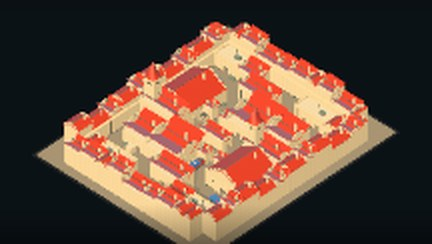
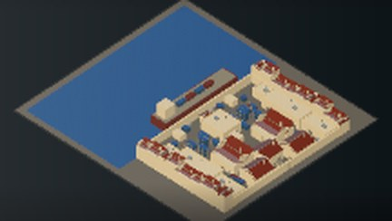
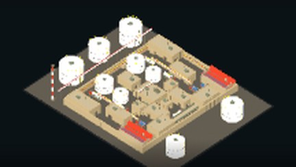

Procedural world
Buildings, terrain, weapons and soldier gear are generated deterministically from recipes. Soldier bodies, their animation clips and the fire and smoke flipbooks are pinned CC0 art packs.
Offline battles / Team Deathmatch
Shooter is a military first-person shooter for Windows. Its maps, weapons and soldier gear come from numeric recipes, and its soldiers wear licensed CC0 bodies and animation. Drop into Team Deathmatch against allied and enemy bots on three procedural maps.
Field manual
Buildings, terrain, weapons and soldier gear are generated deterministically from recipes. Soldier bodies, their animation clips and the fire and smoke flipbooks are pinned CC0 art packs.
One human with local allied and enemy bots in 5v5, 8v8, 10v10 or 15v15. First to 150 kills or the best score after 15 minutes wins.
Movement, combat, hit volumes and AI run on a deterministic 60 Hz simulation. Rendering only reads snapshots, so behaviour doesn't change with quality settings.
You don't need an account, a network or a server. The per-user Windows installer upgrades in place and keeps your settings and key bindings.
Recon
Captured from the v0.3.26 Windows build. Click any image to enlarge it.
Select operation area

Old Town
Inn yards, back alleys, a market square and a two-storey town hall.

Harbour
Transit sheds, a working quay, a container terminal and the harbour office.

Tank farm
A tank farm, a pump house and control rooms joined by a pipe bridge.
Engineering
Every asset in the game is the output of a deterministic program, and the whole build is reproducible from source.
Numeric recipes describe maps, weapons, soldier gear and materials. Their formats are frozen and hash-locked, and every licensed art file is pinned by hash.
Pure, seeded C# generators build meshes, rigs, textures and motion. They run without Unity, so they're unit-tested in plain .NET.
An editor compiler bakes map packages and navmesh with recorded provenance for every generated byte.
A fixed 60 Hz authority runs motor, combat, poses, AI and match rules. It has no rendering dependencies.
Unity 6 URP renders read-only snapshots. IL2CPP / D3D11 player, shipped as a Windows installer.
Loadout briefing
Every binding can be changed in Settings.
Deploy
This is a playtest build: it's playable, but still rough around the edges. You'll need 64-bit Windows 10 or 11 and a Direct3D 11 GPU. It installs per user, so you don't need admin rights.
The installer isn't code-signed, so Windows SmartScreen may warn you. Choose More info → Run anyway.
9d01daac298df7f632c6e5000fc9bc2ee6f6ff8a222b632dfe34e75d94e21759